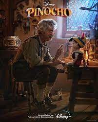

CitriCine
El Cine Citrico
Publica tus criticas sobre cada contenido filmico, Mantente al dia con cada nuevo trailer que salga, Administra una lista de todas las peliculas y series que has visto. Unete a la comunidad citrica
Novedades
Quién no ha soñado con tener una columnita en un periódico para criticar películas, como Carlos
Boyero? Aunque parezca un trabajo serio (y la idea puede imponer en un primer momento), casi
cualquier persona medianamente capacitada, con un mínimo de expresión escrita y paciencia para
ordenar ideas puede criticar una película. ¡Pero para hacer una crítica de cine, no vale hacerlo de
cualquier modo!. Es necesario una pagina. Aquí te la ofrecemos , CitriCine esta para eso.
Se de los primeros en Criticar "Ticket to Paradise" o "Más respeto que soy tu madre".
Sino, puedes mirar las criticas acidas de los miembros de la comunidad.
Ticket to Paradise
Graduada y egresada de la Universidad de Chicago, Wren Butler acompaña su mejor amiga, Lily en un paseo de postgrado a Bali. Después de que Lily decida casarse con un lugareño, sus padres divorciados intentan impedir que su hija cometa el mismo error que ellos habían cometido hacía 25 años. Entretanto, Wren permanece en Bali para disfrutar de las festividades y, en el proceso, encuentra su propio amor con un doctor local..
TráilerMás respeto que soy tu madre
Mirta es una ama de casa de 50 años a la que le mundo se le cae abajo cuando la crisis económica de 2001 arruina a su familia llevándola de la clase media a la pobreza absoluta. Su vida se convierte en un infierno y deberá desarrollar un humor a prueba de balas para convertir cada desgracia en una lección de vida
Tráiler“Pinocho” una película sin alma
En un pueblo italiano, el títere de madera Pinocho cobra vida gracias al Hada Azul. Pinocho se esfuerza por comportarse como un niño de carne y hueso, pero su vida da un vuelco al abandonar a su padre para unirse a un circo..